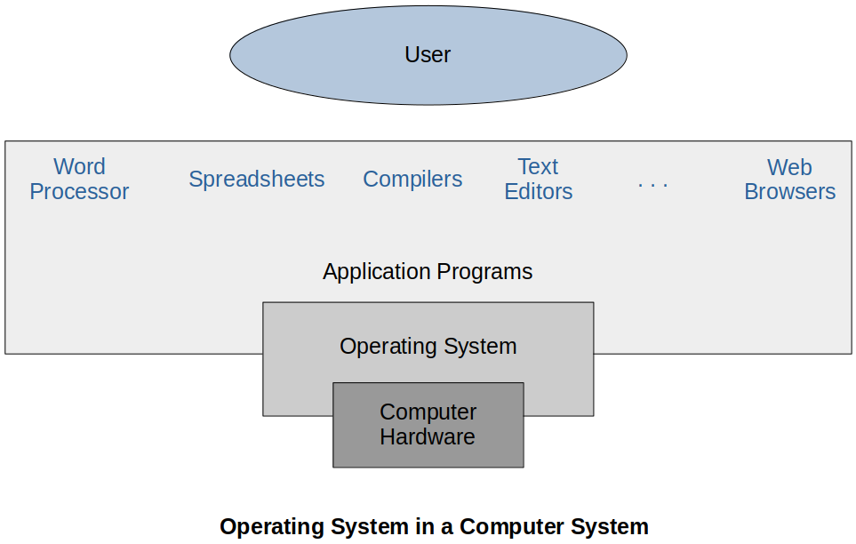
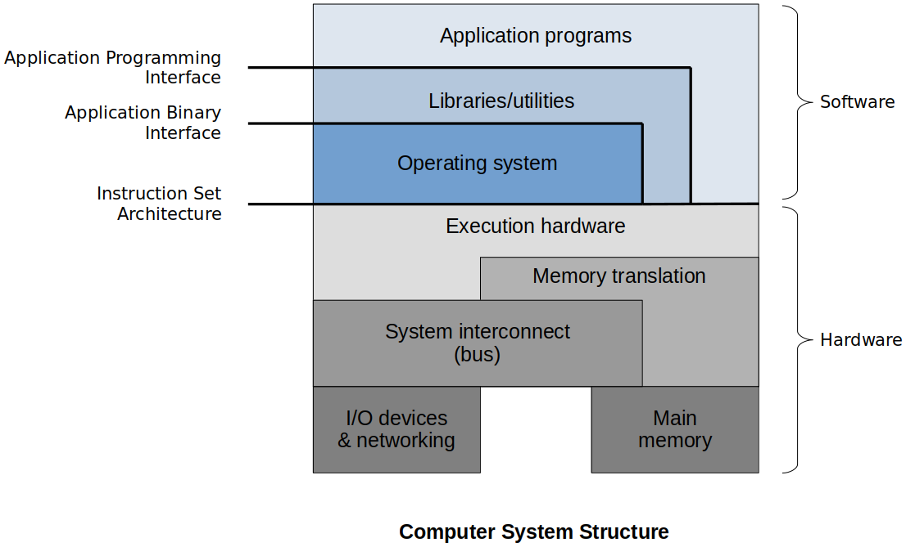
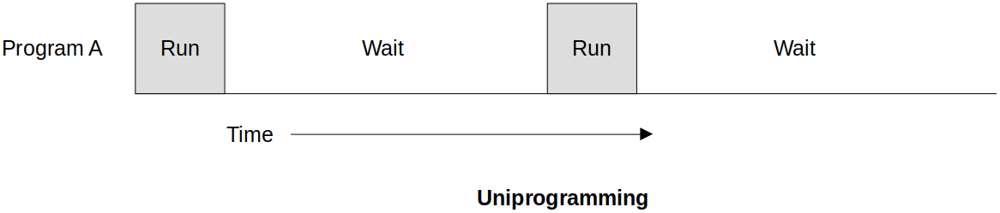
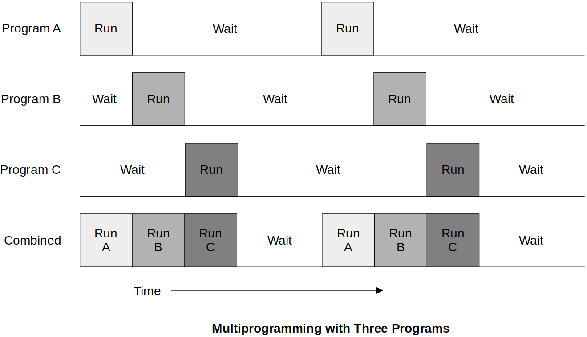
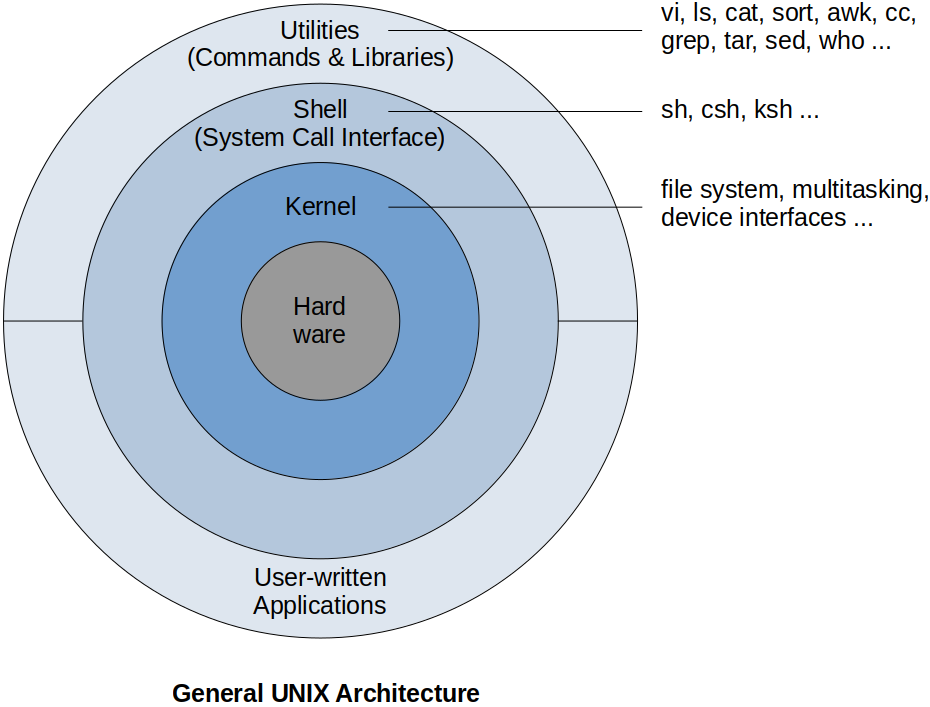

Home | Projects | Notes > Operating Systems > Operating Systems Overview

The operating system controls the execution of application programs and acts as an interface between applications and the system hardware.
An OS makes a computer system more convenient to use.
An OS allows the computer's resources to be used efficiently.
When there many application running that need access to resources you want to make sure that they are used correctly and efficiently.
Efficiency is important in shared systems such as mainframes and super computers where multiple users or applications are sharing the system.
An OS should be constructed in order to permit the OS to evolve without interfering with current services.
We need to make sure that we are able to continually improve that operating system. It's important for the life-critical or system-critical software to not have to be stopped and rebooted in order to update/upgrade OS when you need to make changes to it.
The OS typically provides services in the following areas:
Program development
Provide utilities that program developers can use to access the hardware and other portions of the computer via the OS
e.g., Library functions we can use to interface with the system
Program execution
Load instructions, manipulate data, prepare resources, and run the program
e.g., We just run the program and all the work necessary to run a program such as loading, memory translation will be done by the OS.
Access to I/O devices
Because devices are specialized and differ, the OS provides a uniform interface for applications to use
e.g., The way Unix/Linux made it easier is to treat everything as a file.
Controlled Access to Files
The OS not only manages the file system, but it can also control access through the security such as user management
System access
Similar to file access, the OS must control applications access to different parts of the system
Error detection and response
Errors can always occur in the course of computing, and an operating system must be constantly aware of the possible errors. (e.g., Errors occur in the CPU, memory, I/O devices, network, etc.)
An operating system must also be able to manage those errors so that your computing is consistent and it is still carried on even if some error are encountered.
Accounting
An operating system keeps track of the statistics such as which user use how much and what kind of computer resources. This information is for accounting or accumulating usage statistics which can help researchers that wish to reconfigure the system or to improve the computing services.
Various APIs
API provides the standard binary system call interface, designed for portability of programs across machines using the same OS. Application programming interface is a high-level language standardization of the interfaces to OS facilities.
e.g., I don't need to program directly using the Instruction Set Architecture. OS will translate my program written in a high-level language into the instructions that are supported by the hardware.
Protection & Security
Our data should be secure and everything we do on a computer system must be protected.
In terms or processes, the protection means that access to the system resources must be controlled. It should not be possible for one process to interfere with the others or with the operating system when several different processes are executing simultaneously.
In terms of outside access, the protection means the system is not accessible to outsiders who are not allowed to access the system.
User Interface
Almost all operating systems support user interface and the user interface allows a user to interact with an operating system or a computer itself. (e.g., Command Line Interface (CLI), Graphical User Interface (GUI))
The OS controls all of the system resources, including:
I/O devices
Files
Main and secondary memory
Processor execution time (CPU scheduling)
The OS is itself software that needs to run on the CPU and use the same resources as the applications it manages.
The OS frequently relinquishes control and must depend on the processor to allow it to regain control.
The most critical portion of the OS resides in main memory (i.e., the kernel). The rest of the main memory is made available for applications to use.
Hardware upgrades and new types of hardware
New services
Fixes and patches
For a user-grade system, the upgraded software has to be installed and the computer system has to be rebooted for that to take effect.
For a specialized OS such as a life-support system on an international space station, OS must have the availability to upgrade itself without shutting down the system. (e.g., Live patch)
General rule of thumb, less disruption to the system, the better.
It is desirable to be able to update these features without shutting down the system, especially critical computing systems. Therefore, today's operating systems are designed to allow updates and installations to a running system, when possible.

The OS sits right on top of the hardware and directly interacts with the underlying hardware.
The OS generally supports a set of libraries and utilities that applications can use to communicate with the OS.
e.g., The library call fopen() which invokes the system call open() inside it.
Depending on the computer system structure there may or may not be other software layers other than OS that directly interact with the hardware.
Main memory and external devices are connected via bus.
Memory translation layer includes Translation Look-aside Buffer (TLB), Page Tables, etc.
Execution hardware includes ALU, Control Unit, etc.
How have operating systems evolved over the years?
No operating system - Programmers (or operators) interacted directly with the computer hardware feeding them serious of punch cards.
Computers ran from a console with display lights, toggle switches, some form of input device, and a printer.
Users have access to the computer in "series".
Scheduling - Most installations used a hard copy sign-up sheet to reserve computer time.
Time allocations could run short or long, resulting in wasted computer time.
A considerable amount of time was spent just on setting up the program to run.
Computer sat idle when it didn't have to.
Long story short, very very inefficient!
Early computers were very expensive.
Important to maximize processor utilization
Monitor
User no longer has direct access to processor
Job is submitted to computer operator who batches them together and places them on an input device, the monitor which loads the program and lets it run
Program A runs, monitor reads program B (Only one program running at a time)
Program branches back to the monitor when finished
Job monitor software lead to the creation of memory protection, privileged instructions and interrupts which, in turn, helped create improvements in utilization in the next type of OS.
Monitor controls the sequence of events
Resident Monitor is software always in memory
Monitor reads in job and gives control
Job returns control to monitor
Processor time alternates between execution of user programs and execution of the monitor
Sacrifices:
Some main memory is now given over to the monitor
Some processor time is consumed by the monitor
Despite overhead, the simple batch system improves utilization of the computer.
Uniprogramming
Only one program is running from beginning to completion (While the program is performing an I/O operation, the processor just sits there idle wasting time)
I/O is slow compared to CPU-involved instructions (arithmetic)
The processor spends a certain amount of time executing, until it reaches an I/O instruction; it must then wait until that I/O instruction concludes before proceeding.

Multiprogramming refers to the management of multiple processes within a uniprocessor system. Also called as concurrency; multiple threads taking turns to execute on a CPU. (Multiprocessing
Multiprogramming is the method of allowing more than one program to be interleaving their execution.
Multiprogramming increases CPU utilization by organization jobs (code and data) so that the CPU always has one to execute. Programs to be run are loaded onto the main memory in the form of processes and they are assigned CPU taking turns as necessary.
Without multiprogramming, a single user cannot, in general, keep either the CPU or the I/O devices busy at all times. For example, even when a process occupying the CPU carries out an I/O operation, the CPU is held by that process in idle state. All other processes waiting to be executed cannot utilize the CPU until the process completes its job and releases the CPU.
When the I/O task is complete, an interrupt is sent to the CPU. The monitor can then interpret the interrupt and return the first program to execution status.
Original multiprogramming systems required all of the executing programs to reside in memory. Small memory limited the number of running programs.
Multiprogramming is a common feature of modern operating systems.
Multiprogrammed systems provide an environment in which the various system resources (e.g., CPU, memory, peripheral devices) are utilized effectively, but they do not provide for user interaction with the computer system.

Because batch systems were designed to handle the execution of mainly non-interactive systems, they are not suitable for user-oriented systems.
Time-sharing systems were developed to enable quick user response time at the sacrifice of compute time.
CPU executes multiple processes by switching among them. Switches between multiple processes occur so fast and frequently that the users can interact with each program while it is running. (This wasn't possible in the multiprogramming systems.)
This enables many people to share the system and perceive it as dedicated to themselves. It required the ability to load more applications into memory at the same time.
A time-shared operating system uses CPU scheduling and multiprogramming to provide each user with a small portion of a time-shared computer. (Each user has at least one separate process in main memory.)
Academic institutions used these systems to provide programming courses. Students used terminals to interact with the operating systems and write and test programs (BASIC).
Critical areas of development that support modern operating systems.
Process
Memory management
Information protection & security
Scheduling and resource management
Fault tolerance
The concept of a process is central to the design of operating systems.
A process is a program in execution.
A process contains three components:
An executable program
The associated data needed by the program (variables, work space (e.g., stack), buffers, etc.)
The execution context (or "process state") of the program - this is essential
Part of a data structure that operating system keeps about every process
It is the internal data by which the OS is able to supervise and control the process.
Includes the contents of the various process registers
Includes information such as the priority of the process and whether the process is waiting for the completion of a particular I/O event.
The OS has 5 principal storage management responsibilities:
Process isolation
Automatic allocation and management
Support of modular programming
Protection and access control
Long-term storage
The nature of the thread that concerns an organization will vary greatly depending on the circumstances.
The problem involves controlling access to computer systems and the information stored in them.
The KEY responsibility of an OS is managing resources.
Resource allocation policies must consider:
Efficiency
Fairness - No starvation!
Responsiveness
Another feature of modern systems
Fault tolerance can be supplied both by:
Hardware (e.g., redundant disk arrays)
Software (e.g., verification, sanity checks)
The more reliable a system is, the more costly.
The extent to which adoption of fault tolerant measures is determined by how critical the system or resource is.
| Class | Availability | Annual Downtime |
|---|---|---|
| Continuous | 1.0 | 0 |
| Fault Tolerant | 0.99999 | 5 mins |
| Fault Resilient | 0.9999 | 53 mins |
| High Availability | 0.999 | 8.3 hrs |
| Normal Availability | 0.99 - 0.995 | 44 - 87 hrs |
Continuous system - Very expensive. If one component fails, another in the system must be able to take over its place in such a way that the system goes on as if nothing has every happened.
Fault resilient system - e.g., Weapon monitoring system, etc.
High availability system - e.g., Time sheet program, airline reservation system, etc. It can be down for a short period of time here and there for system updates, issue resolution, etc.
Architectural developments leading to modern operating systems:
Microkernel design (allows for flexible enhancements to OS without impacting the core)
Multithreading
Distributed design
Object Oriented design
Hardware advances impact operating systems. The more hardware support you have for some features the less work the OS has to do.
e.g., Translation Look-aside Buffer (TLB), Page Table
Specialized operating systems for specialized architectures
Parallel computing - SMP, vector machines
Distributed computing - Mesh, butterfly
Cloud computing
Older operating systems required the entire operating system code (or most of it) to be resident in memory (a.k.a. monolithic kernel).
As OS responsibilities grew, so did the size of the OS.
Today, OS are designed in a more object-oriented or distributed fashion.
A microkernel design only keeps a few essential functions (or modules) resident in memory (the kernel). It pulls in other functionality as needed.
Example:

Types of computer systems based on the number of general purpose processors:
Single Processor Systems
Contains only one processor which is capable of executing a general purpose instruction set including instructions from the user processes. Other special purpose processors are also present which perform device specific tasks.
Multiprocessor Systems (a.k.a. Parallel Systems or Tightly Coupled Systems)
Contains multiple processors in close communication and synchronization, sharing the computer bus and sometimes the clock, memory, and peripheral devices. Those processors may be carrying out the same task together or the different tasks independently.
Advantage
Increased throughput (performance),
Economy of scale (since shared resources)
Increased reliability (even if one fails others can keep the system running)
Types of Multiprocessor Systems
Symmetric multiprocessing (SMP)
All processors are equal. They can execute any type of processes as required.
Asymmetric multiprocessing (AMP, ASMP)
The processors are inherently unequal. There may be a master slave relationship where the master processor may assign processes to other processors.
Clustered Systems
Like multiprocessor systesms, clustered systems gather together multiple CPUs to accomplish computation work. They are composed of two or more individual (complete) systems coupled together.
Advantage
High availability (even if one fails other can keep the system running)
Types of Clustered Systems
Symmetric
One machine is in the hot-standby mode while others are running applications. If one system fails, the one in the hot-standby mode will take its place.
Asymmetric
Two or more hosts run applications and they monitor each other.
Bootstrap program
The initial program that runs when a computer is powered up or rebooted.
It is stored in the ROM.
It must know how to load the OS and start executing that system.
It must locate and load into memory the OS kernel.
Interrupt
The occurrence of an event is usually signaled by an interrupt from hardware or software.
Hardware may trigger an interrupt at any time by sending a signal to the CPU, usually through the system bus.
When the CPU is interrupted, it stops what it is doing and immediately jumps to a designated location. The designated location usually contains the starting address where the service routine (i.e., interrupt handler) of the interrupt is located.
The interrupt service routine is executed.
Upon completion, the CPU resumes the interrupted computation.
System call (monitor call)
Software may trigger an interrupt by executing a special operation called the system call.
A programming running in user mode may need an access to some of the resources managed by the kernel. In such cases, the user mode program signals (makes a system call to) the operating system, (context) switch to kernel mode temporarily so that it can use the resources and (context) switch back to user mode when done.
System calls provide an interface to the services made available by an operating system. System call is the programmatic way in which a computer program requests a service from the kernel of the operating system.
System calls are generally available as routines written in C and C++.
Even a simple task may involve a lot of system calls. There are thousands of system calls that are executed per second during the execution of certain program in your system.
I/O bound process vs. CPU bound process
I/O bound refers to a condition in which the time it takes to complete a computation is determined principally by the period spent waiting for input/output operations to be completed. This is the opposite of a task being CPU bound.
CPU-bound (or compute-bound) refers to when the time for a computer to complete a task is determined principally by the speed of the central processor.
Stallings, W. (2018). Operating Systems: Internals and Design Principles (9th ed.). Pearson Education, Inc.